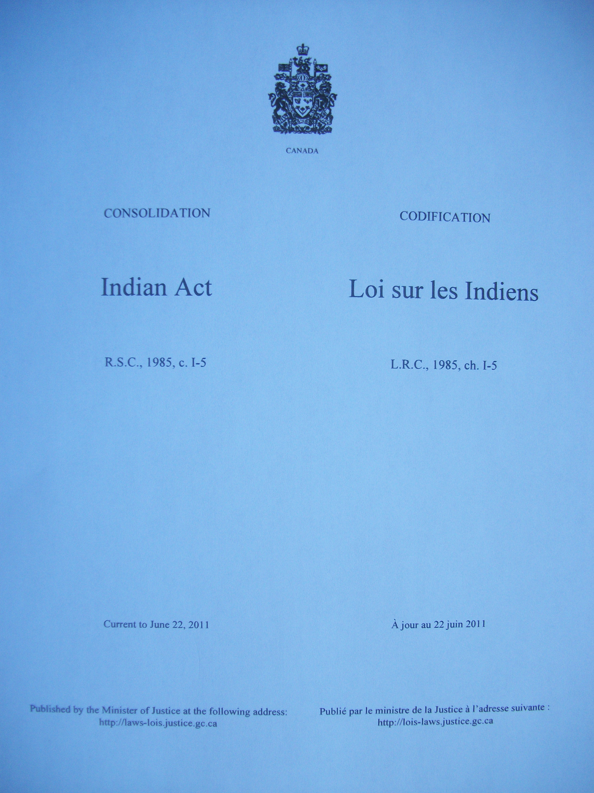

The Indian Act, 1876

The Indian Act of 1876, is the oldest legislation governing First Nations in Canada, however it remains to be seen as an archaic and patriarchal law the negatively affects the lives of First Nations people. The Act was enacted by the Canadian parliament putting an end to the manner in which First Nations governed themselves, it gave the government of Canada the authority under section 91(24) of the Constitution Act, 1867 to legislate matters concerning “Indians and Lands reserved for Indians (Roberts 115).” This abolished the British crown’s recognition of the autonomy of First Nations through the Royal Proclamation of 1763. The government subjectively passed the legislation without discussion and consultation with the First Nations.
First Nations view the Indian Act as a discriminatory tool that establishes the government’s perspective to “civilize” and “assimilate” First Nations into mainstream society. The Act’s influence of European values would dictate all aspects of First Nations lives devaluing their culture completely. The Act conflicts with the principles of the Treaty, First Nations never relinquished their land, culture, and autonomy in exchange for a government to impose foreign laws and way of life. The government seen First Nations as minors or wards of the state (Price 64) and took it upon themselves to place themselves in a position of authority over First Nations. The government modified the terms of the treaty through provisions of the Indian Act and used it to control the First Nations.
Some examples of outstanding issues from a First Nations perspective:
First Nations never agreed with the terms of the Indian Act and see it as a hindrance to their autonomy and progression of Treaty rights. Since the Act has been enacted, there have been amendments; however First Nation leaders are asking the Federal government to replace the Act in consultation with them, it remains an outstanding issue. Some First Nations are taking control of their own jurisdiction and enacting laws within their own Nations.
Saskatchewan Indian Cultural Centre article on Indian Act: